Введение Что вы найдете в этом документе и как это можно использовать
Благодарим вас за покупку шаблона Magento. Этот документ состоит из нескольких частей и продемонстрирует вам весь процесс создания с нуля и администрирования магазина Magento. Мы сделали все возможное, чтобы эта инструкция была предельно понятной и простой в использовании.
Что такое Magento Commerce?
Magento - это многофункциональная платформа для электронной коммерции с открытым исходным кодом. Она предоставляет гибкие возможности и полный контроль над внешним видом, содержимым и функциями интернет-магазинов. Интуитивная административная панель Magento обеспечивает замечательные возможности для маркетинговых мероприятий, поисковой оптимизации и управления каталогом для полного соответствия сайта уникальным бизнес-процессам каждого магазина. Созданная полностью масштабируемой и при поддержке сети Varien, Magento предлагает универсальное комплексное решение для электронной коммерции. Подробнее
Что такое шаблон Magento?
Magento шаблон - это готовый дизайн для вашего магазина на основе Magento. Другими словами, вы можете легко изменить внешний вид вашего магазина, просто установив новый шаблон. Не смотря на всю свою простоту, в наши шаблоны Magento включены все необходимые исходные файлы, которые вы можете редактировать или дополнять так, как вам это нужно.
Структура файлов
Архив шаблона, который вы скачали, состоит из нескольких папок. Давайте разберемся, что в них находится:
- Documentation - содержит файлы документации
- documentation.html - основной файл документации. Вы его сейчас читаете :)
- screenshots - содержит скриншоты шаблона. Не для рабочего сайта
- sources - содержит исходные файлы шаблона
- psd - исходные файлы для Adobe Photoshop (.psd)
- demo - содержит дополнительные страницы и пользовательские блоки, входящие в шаблон
- sample_data - содержит демо данные для шаблона Magento
- media - содержит файлы и папки, которые необходимо загрузить в корневую папку используемой установки Magento
- dump.sql.gz - резервная копия базы данных. Содержит демонстрационные данные шаблона.
- theme### - содержит файлы и папки шаблона Magento, которые необходимо загрузить в корневую папку используемой установки Magento
- fonts_info.txt - содержит ссылки, по которым могут быть загружены нестандартные шрифты, используемые в шаблоне
- info.txt - содержит инструкции по распаковке исходных файлов.
Validation
Both HTML markup and CSS styles used in our templates are semantically correct and valid. However some W3C errors still can take place. Making code 100% W3C valid eliminates the usage of modern website technologies as CSS3 features and HTML5 markup. Our goal is to deliver rich user experience with high quality templates and sometimes we have to break some rules.
Полная установка
У меня нет интернет магазина Magento и я хочу установить его с нуля.
Устанавливаем движок Magento Commerce, тему Magento, демо-данные и все требуемые расширения.
Установка темы
У меня уже есть интернет магазина Magento и я лишь хочу поменять его внешний вид путем установки нового шаблона.
Данный метод устанавливает тему Magento и все требуемые расширения.
Подготовка
Прежде чем перейти к установке магазина Magento, нужно полностью подготовиться. Рекомендуется выполнить следующие подготовительные шаги:
Программное обеспечение
Для полноценной работы с шаблоном Magento мы рекомендуем скачать все требуемые приложения. Список необходимого программного обеспечения находится на странице предпросмотра шаблона. Требования для различных шаблонов могут меняться, поэтому мы перечислим самые основные:
- Прежде всего нужны правильные приложения для распаковывания защищенного паролем архива sources_#########.zip. Можно воспользоваться WinZip 9+ (Windows) и Stuffit Expander 10+ (Mac).
- Также может понадобиться программа Adobe Photoshop. Она используется для редактирования исходных файлов .PSD и необходима, если требуется изменить графический дизайн и изображения шаблона.
- Для редактирования исходного кода файлов шаблона нужно использовать редактор кода, например Adobe Dreamweaver, Notepad++, Sublime Text и т.п.
- Чтобы загрузить файлы на хостинг сервер, потребуется FTP менеджер, например Total Commander, FileZilla, CuteFTP и т.д.
Хостинг
Поскольку Magento Commerce является приложением PHP/MySQL, необходимо подготовить хостинг сервер.
При наличии активного сервера, нужно проверить его на соответствие требованиям Magento и на готовность использовать интернет-магазины Magento.
Также можно установить Magento на компьютер при помощи локального сервера. Для создания локального хостинг сервера необходимо использовать программное обеспечение WAMP, AppServ, MAMP и т.п. Любое из них устанавливается как обычная программа и поддерживает Magento.
Вы можете воспользоваться следующими туториалами для настройки локального сервера:
Полная установка
Полная установка используется в том случае, если нужно установить интернет магазин Magento вместе с демонстрационным контентом. Предусматривается предварительное выполнение всех подготовительных шагов и наличие необходимых программ.
По большому счёту установка будет состоять из трёх условных этапов:
- Создание базы данных для нашего магазина.
- Копирование всех необходимых файлов на сервер.
- Установка движка Magento Commerce вместе с приобретённой вами темой.
Приступим!
1. Создание базы данных
Для начала необходимо подготовить новую базу данных для интернет магазина Magento. Ее можно создать через инструмент управления базами данных в контрольной панели хостинга (обычно PhpMyAdmin).
При создании базы данных вы получите такие данные: название базы данных, имя пользователя, пароль и адрес сервера баз данных. Сохраните эти данные, так как они понадобятся вам при установке Magento.
При помощи phpMyAdmin возможно создать новую базу данных в 3 простых шага: (см. следующие слайды)
- Щелкните кнопку Database (база данных ) в верхнем меню навигации, чтобы перейти в список баз данных
- Введите название базы данных в поле "Create new database (Создать новую базу данных)"
- Нажмите справа на кнопку Create (Создать)
База данных появилась в списке. Кликните по ее названию, чтобы получить доступ к ней:
-

1. Отктройте вкладку "Database (База данных)", чтобы перейти в список баз данных
-

2. Введите название базы данных
3. Щелкните кнопку "Создать"
-
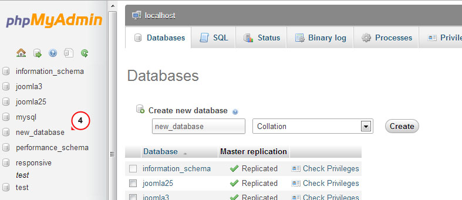
4. База данных появилась в списке. Кликните по названию, чтобы получить доступ в базу данных.
Вы также можете воспользоваться детальным видео туториалом Как создать базу данных
При возникновении сложностей при создании базы данных, необходимо обратиться к хостинг провайдеру за поддержкой.
2. Импортирование демонстрационных данных
Архив шаблона Magento содержит файл с демонстрационными данными (dump.sql или dump.gz). Этот файл находится в папке /sources/sample_data вашего шаблона. Он позволяет вам установить демонстрационные данные, чтобы ваш сайт после установки шаблона выглядел так же, как на демо версии шаблона.
Не используйте файл dump.sql.gz, если у вас есть уже работающий магазин. Импорт файла dump.sql.gz удалит все добавленные туда товары. Если вы не хотите устанавливать демонстрационные данные, то устанавливайте Magento на пустую базу данных. Пропустите этап установки демонстрационных данных в этой инструкции.
Для установки файла с дампом выполните следующие действия:
- В панеле управления базами данных (PhpMyAdmin) выберите ту базу данных, которую планируете использовать для установки Magento Commerce (Вы создали её выполнив действия предыдущего пункта инструкции).
- Перейдите на вкладку "Import" и нажмите кнопку "Browse".
- Перейдите в папку "/sources/sample_data" вашего шаблона и выберите файл dump.sql.gz.
- Нажмите кнопку "GO". Процесс импортирования может занять несколько минут.
3. Загрузка движка с официального сайта
Для установки Magento вам нужно загрузить архив с официального сайта www.magentocommerce.com/download.
Из выпадающего меню выберите тип архива и нажмите кнопку Download. Для скачивания вам придётся зарегистрироваться на сайте Magento.
Убедитесь, что вы скачиваете версию Magento, которая совместима с вашим шаблоном. Все версии Magento доступны на той же странице, на вкладке Release Archives.
4. Извлечение файлов
После окончания загрузки вам потребуется распаковать файлы только что скачанного архива Magento.
Вы можете сделать это с помощью менеджера архивов, к примеру: WinZip(PC), StuffitExpander(MAC) и т.д.
Посмотрите инструкции по извлечению архивов с помощью WinZip(PC) и StuffitExpander(MAC).
Внимание: если в панели управления хостингом есть кнопка 'Extract' (распаковать/извлечь), вы можете использовать ее для распаковки архива прямо на сервере (сам архив вам понадобится загрузить на хостинг). Это существенно ускорит процесс загрузки файлов.
5. Загрузка файлов Magento
В случае, если вы распаковали архив локально (на своем компьютере), вам потребуется загрузить файлы на хостинг.
Вы можете использовать файловый менеджер панели управления вашим хостингом или воспользоваться одним из FTP приложений, например: FileZilla, TotalCommander, CureFTP и т.д.
Посмотрите подробную видео инструкцию Как загрузить файлы на сервер с помощью FTP мэнеджера и Как загрузить файлы с помощью cPanel (WebHost менеджер, WHM).
6. Копирование файлов темы
Следующий этап процесса установки - добавление шаблона. Шаблон должен быть установлен в любом случае, вне зависимости от того, устанавливаете вы демонстрационные данные или нет.
- Для начала откройте архив с шаблоном и перейдите в папку theme###.
- Загрузите содержимое папки theme### в папку установки Magento (загрузите папки "app", "skin" и другие). Эти папки содержат файлы темы. Они никак не скажутся на ваших файлах, созданных ранее.
- Если вы импортировали файл dump.sql.gz и собираетесь использовать демонстрационные данные, то вам нужно будет загрузить изображения товаров. Загрузите папку "media" из папки sources/sample_data в папку установки Magento.
- Если вы не импортировали файл dump.sql.gz, то вам не нужно загружать папку "media".
7. Установка Magento
После окончания загрузки файлов можно приступать к установке Magento. Откройте ваш браузер и в адресной строке браузера напишите'доменное имя/путь к вашей папке Magento'. Вы должны увидеть экран приветствия. Следуйте инструкциям ниже для установки Magento.
Внимание: файл dump.sql.gz должен быть импортирован в чистую базу данных ПЕРЕД установкой Magento.
Шаг 1: Installation Assistant
Прочтите, пожалуйста, лицензионное соглашение и поставьте галочку, подтверждающую ваше с ним согласие.
Шаг 2: Installation Assistant (Локализация)
Выберите локаль, временную зону и валюту по умолчанию. Выбор локали определит язык панели управления вашим магазином. Если вы хотите изменить язык страниц магазина Magento, вам потребуется загрузить и установить соответствующие локали дополнительно. Все настройки могут быть изменены позже через панель управления Magento.
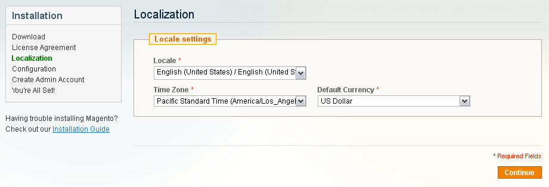Шаг 3: Настройка
Здесь вам необходимо указать данные для доступа к базе данных и некоторые базовые настройки. Database Connection – укажите адрес сервера, название базы, имя пользователя и пароль. Свяжитесь с вашим хостером, если у вас нет необходимых данных.
Убедитесь, что вы создали базу данных для установки Magento. Также убедитесь, что она пустая и в ней нет никаких таблиц. Web access options и Session Storage Options – оставьте эти разделы без изменений, если не уверены в том, что делаете. Настройки по умолчанию подходят в большинстве случаев.
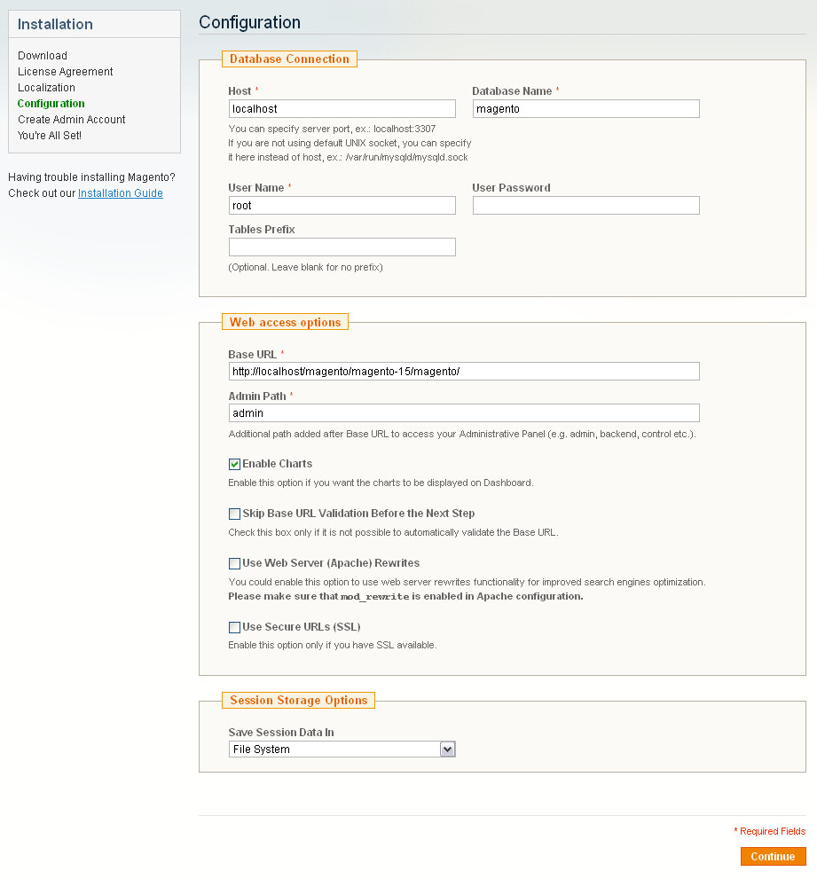Если все правильно, нажмите кнопку 'Continue'.
Шаг 4: Create Admin Account
Здесь вам нужно указать личные данные владельца магазина или администратора.
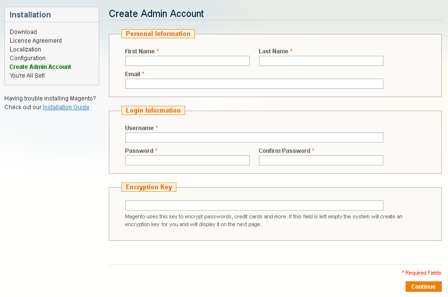Когда данные будут введены, нажмите кнопку 'Continue'.
Шаг 5: You are All Set
Это завершающий этап установки. Скопируйте зашифрованный ключ и сохраните его в надежном месте. Вы можете использовать кнопки в правом нижнем углу для перехода в панель управления магазином или на страницы самого магазина.
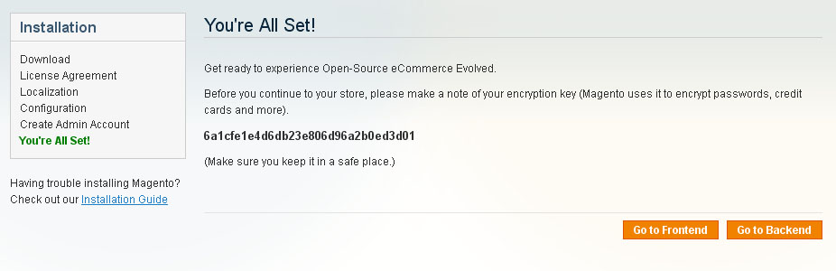Установка темы Magento
В первую очередь убедитесь, что установленная версия Magento совместима с выбранным вами шаблоном. Если вы используете устаревшую версию Magento, то обновите ее. Не забудьте создать резервную копию файлов магазина и базы данных. Инструкции по обновлению Magento доступны на сайте Magento Wiki.
Если движок Magento соответствует требованиям шаблона, то можно приступать к установке.
- Откройте архив шаблона и перейдите в папку theme###.
- Загрузите папку theme### в корень установки Magento (загрузите "app", "skin" и остальные папки). Эти папки содержат файлы шаблона. Они не повлияют на уже существующие файлы.
1. Настройка шаблона
Мы рассмотрим настройку шаблона на конкретном примере. Настроим его таким образом, чтобы он повторил вид темы на странице предпросмотра (Live Demo) не затрагивая базу ваших товаров.
Активируйте новую тему
- Откройте панель управления Magento и выберите в верхнем меню System > Design.
- Нажмите кнопку "Add Design Change".
- В поле "Custom Design" выберите название шаблона (к примеру, theme###).
- Нажмите кнопку "Save" для сохранения внесенных изменений.
Переиндексация данных
- Откройте панель управления Magento и выберите в верхнем меню System > Index Management.
- Выберите поле "Select All" в верхнем левом углу.
- Справа в поле "Actions" выберите "Reindex Data".
- Нажмите кнопку "Submit".
- Сохраняйте терпение. Эта операция может потребовать некоторое время.
Отключение кеширования
Для того, чтобы все вносимые изменения были мгновенно видны на вашем магазине нужно отключить кеширование данных. Это избавит вас от необходимости постоянного обновления кеша после каждого внесённого изменения. Снова включим его после того, как настроим магазин.
- Откройте панель управления Magento и выберите в верхнем меню System > Cache Management.
- Выберите поле "Select All" в верхнем левом углу.
- Справа в поле "Actions" выберите "Disable".
- Нажмите кнопку "Submit".
2. Настройка логотипа.
Следуйте этой инструкции для установки логотипа, предоставляемого в комплекте с темой (его видно на странице Live Demo).
- Откройте панель управления Magento и выберите в верхнем меню System > Configuration.
- Перейдите на вкладку "Design".
- В разделе "Header" отредактируйте значение поля "Logo Image Src". Измените его с "gif" на "png".
- Нажмите кнопку "Save Config".
Для установки логотипа вашей компании следует скопировать файл логотипа в папку /images приобретённой вами темы Magento.
3. Настройка страниц
Для полного соответствия приобретённй вами темы тому, что вы видели у нас на Live Demo шаблона необходимо соответствующим образом настроить страницы магазина. Мы предоставляем все исходные файлы с кодом страниц. Их нужно внести в Админ панель магазина по инструкции ниже используя таблицу настроек. Таблица настроек находится на странице Technical details на Live Demo приобретённого вами шаблона. Ссылка на неё есть в файле документации, который вы получили вместе с шаблоном:
- Documentation
- documentation.html
Больше всего изменения затронут главную страницу шаблона, которая может содержать следующие элементы: баннеры, слайдер, галерею и т.д.
Мы рекомендуем отключить WYSIWYG редактор. Для того, чтобы сделать это, в верхнем меню панели управления, выберите System > Configuration. Откройте раздел "Content Management" и в окне WYSIWYG Options переключите "Enable WYSIWYG Editor" на "Disabled Completely".
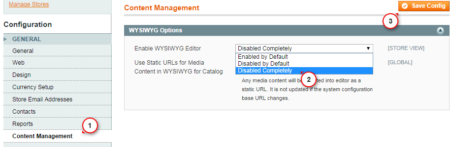
Если вы уже вносили изменения в код ваших страниц и хотите к ним добавить наш код не затрагивая ваших изменений, то лучше обратитесь к специалисту, или перед началом работы сделайте резервную копию.
- В верхнем меню выберите CMS > Pages. Тут находятся все страницы магазина. Home page, About Us и Customer Service уже должны быть доступны, так что вам не потребуется их добавлять. Вам нужно только обновить HTML и XML содержимое страниц. Откройте любую из них для того, чтобы получить доступ к содержимому.
- Откройте страницу и выберите вкладку Content. Она содержит HTML код страницы. Вы можете взять необходимый код из соответствующего исходного файла. Список исходных файлов вы можете найти в таблице на странице "Template Settings" Live Demo вашего шаблона. Скопируйте код из исходного файла и вставьте его в раздел content.
- Когда закончите с кодом, перейдите на вкладку "Design". Она содержит XML код страницы. XML код позволяет вам встроить статические блоки Magento и виджеты на страницу. XML код должен быть скопирован так же, как и HTML из исходного файла. Вставьте новый код в раздел "Layout Update XML".
- Не забудьте выбрать необходимую настройку "Layout".
- В случае, если вам нужна новая страница, нажмите кнопку "Add New Page" в правом верхнем углу.
При любых сложностях обратитесь к подробной инструкции Как установить страницы демо-контента вручную.
4. Настройка статических блоков
После настройки страниц нужно настроить статические блоки. Процесс очень похож - вам нужно скопировать код из исходных файлов и вставить в соответствующие поля админ панели. Пользоваться нужно аналогичной таблицей, только для статических блоков.
- В верхнем меню выберите CMS > Static Blocks
- Нажмите кнопку "Add New block" в правом верхнем углу для добавления нового блока.
- Укажите имя блока и идентификатор. Вы можете найти необходимые данные в таблице настроек шаблона (см. пункт настройки страниц).
- Откройте исходные файлы блоков и скопируйте оттуда HTML код в раздел content.
Внимание: Некоторые шаблоны не содержат статических блоков, так что таблица может быть пустой.
Исходные файлы для статических блоков находятся в папке "sources\demo\static_blocks\" архива шаблона.
После окончания настроек страниц и статических блоков ваш магазин готов к работе.
Настройка стандартных расширений
1. Модуль валют
- Откройте панель управления Magento.
- В верхнем меню выберите System > Configuration.
- Перейдите на вкладку General и выберите Currency Setup.
- В Currency Options, нажав кнопку CTRL, выберите валюты, которые должны быть доступны в вашем магазине. Когда выберете все необходимые, нажмите кнопку Save Config для сохранения изменений.
- Перейдите в System > Manage Currency Rates в верхнем меню.
- Установите необходимый курс валют или настройте импорт. Нажмите кнопку Save Currency Rates для сохранения изменений.
2. Модуль Polls
В верхнем меню выберите CMS > Polls.
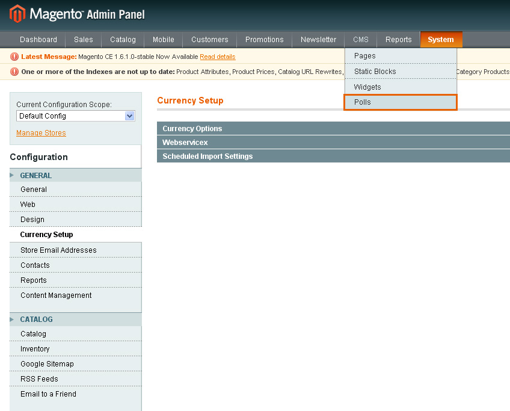
Настройка расширений ТМ
1. Google Map
Данный модуль позволяет вам вставить Google карту на вашем сайте Magento. По умолчанию, модуль предоставляет две карты: для страницы контактов и карту, которая отображается в футере других страниц.
Обе карты можно настроить в админ панели Magento: System > Configuration > Templatemonster > Google Map секция.
Рассмотрим опции модуля:
| API key - | Google Api Key необходим для корректной работы карты. Вы можете получить и активировать его, перейдя по следующей ссылке. |
| Coordinates - | координаты местоположения, которое будет находиться по центру отображаемой карты. Эти координаты вы можете получить через сервис Google Maps или же на следующем сайте. |
| Sensor - | включение/отключение геолокации. |
| Zoom - | значение увеличения карты (не должно превышать 8). |
| Map Type - | тип отображаемой карты (roadmap, satelite, hybrid, и т.д.). |
| Map width - | ширина карты. |
| Map height - | высота карты. |
| Styles - | стиль отображения карты. Для изменения внешнего вида карты, используйте стили с сайта snazzymaps. |
| Disable UI - | скрывает элементы управления картой. |
| Scrollwheel - | отключает скролинг колесиком мышки. |
| Draggable - | включает возможность передвигать карту, зажав левую кнопку мышки или пальцами на touch (сенсорных) устройствах. |
| Add marker - | добавляет маркер (указатель) на карту. |
| Marker coordinates - | устанавливает координаты маркера. |
| Marker title - | текст, который будет отображаться в тултипе, появляющемся при наведении на маркер. |
| Marker image - | путь к картинке маркера, если вы хотите заменить стандартную. Картинка должна находиться в папке skin/frontend/default/themeXXX/images/ вашей установки Magento. |
| Infowindow - | дополнительная информация, которая будет отображаться при клике на маркер. |
2. Facebook like box
Данный модуль позволяет выводить Facebook like box в вашем Magento магазине.
Настроить его мы можете в админ панели Magento, в секции System > Configuration > Templatemonster > Facebook.
Рассмотрим опции модуля:
| App ID - | идентификатор вашего приложения в Facebook. Для использования Facebook Like box, вам необходимо зарегистрировать ваше приложение. Как это сделать вы можете узнать, перейдя по следующей ссылке. |
| Page URL - | ссылка на страницу в Facebook. |
| Show Faces - | позволяет скрывать или отображать фото профиля людей, которые лайкнули страницу. |
| Hide cover - | позволяет убрать фоновую картинку в хедере. |
| Show Posts - | позволяет включить отображение последних постов на странице. |
| Height - | высота области плагина |
| Width - | ширина области плагина. |
По умолчанию, блок плагина выводится в левой колонке. Но существует три варианта вывода: слева, справа и в футере.
Для изменения позиции вывода блока необходимо открыть файл tm_facebook.xml, который находится в папке app/design/frontend/default/themeXXX/layout вашей установки.
<reference name="left"> <block type="core/template" name="tm_facebook_like_left" as="tm_facebook_like_left" template="tm/facebook/facebook_like.phtml"/> </reference> <!-- <reference name="right"> <block type="core/template" name="tm_facebook_like_right" as="tm_facebook_like_right" template="tm/facebook/facebook_like.phtml"/> </reference> --> <!-- <reference name="footer"> <block type="core/template" name="tm_facebook_like_footer" as="tm_facebook_like_footer" template="tm/facebook/facebook_like.phtml"/> </reference> -->
В этом файле закомментировано два блока. И лишь один блок с name="left" не закомментирован. Он и отвечает за вывод плагина в левой колонке.
Если же вам необходимо вывести плагин, к примеру, в футере, вам необходимо:
- 1. Удалить комментирование блока с name="footer" (последний в примере кода выше) и закомментировать блок с name="left" (первый в примере кода выше).
- 2. Открыть файл footer.phtml, который находится в папке app/design/frontend/default/themeXXX/template/page/html.
- 3. Вставить в нужное вам место следующий код:
<?php echo $this->getChildHtml('tm_facebook_like_footer') ?>
Теперь Facebook блок будет отображаться в футере.
3. Instagram module
Instagram модуль позволяет отобразить Instagram галерею в вашем магазине.
Данный модуль позволяет отображать два типа галереи: галерея пользователя и галерея по тегу.
Все опции управления доступны в админ панели, в секции System > Configuration > Templatemonster > Instagram.
Рассмотрим опции модуля:
| Client ID - | идентификатор Instagram приложения. Чтобы получить данный идентификатор, вы должны зарегистрировать ваше приложение по следующему адресу. |
| Username - | имя пользователя в Instagram, чью галерею вы хотите отобразить. |
| Sample tag - | теги, по которым будут выводиться картинки. |
| Product tag - | используется для поиска похожих картинок, где начало тега состоит из набора выбранных параметров. К примеру, #storetitleproductname, #productsku, #storetitleproductsku и т.д. |
4. Twitter module
Twitter модуль позволяет отобразить ленту твитов в вашем магазине.
Все опции управления доступны в админ панели, в секции System > Configuration > Templatemonster > Twitter.
Рассмотрим опции модуля:
| Widget ID - | идентификатор Twitter виджета. Данный идентификатор можно получить, зарегистрировав ваш виджет в настройках аккаунта. |
| Account name - | название Twitter аккаунта пользователя, чью ленту вы хотите отобразить. |
| Color Scheme - | цветовая схема виджета. Может быть светлой или тёмной. |
| Layout enhancements - | данная опция позволяет скрывать часть элементов разметки виджета. |
| Tweet limit - | количество отображаемых твиттов в ленте. |
| Link color - | позволяет изменить цвет ссылок в ленте. |
| Border color - | позволяет изменяет цвет границ в ленте. |
| Height - | высота окна виджета. |
| Width - | ширина окна виджета. |
По умолчанию, блок плагина выводится в левой колонке. Но существует три варианта вывода: слева, справа и в футере.
Для изменения позиции вывода блока необходимо открыть файл tm_twitter.xml, который находится в папке /app/design/frontend/default/themeXXX/layout вашей установки.
<reference name="left"> <block type="core/template" name="tm_twitter_timeline" as="tm_twitter_timeline" template="tm/twitter/twitter_timeline.phtml"/> </reference> <!-- <reference name="footer"> <block type="core/template" name="tm_twitter_timeline" as="tm_twitter_timeline" template="tm/twitter/twitter_timeline.phtml"/> </reference> <reference name="right"> <block type="core/template" name="tm_twitter_timeline" as="tm_twitter_timeline" template="tm/twitter/twitter_timeline.phtml"/> </reference> -->
В этом файле закомментировано два блока. И лишь один блок с name="left" не закомментирован. Он и отвечает за вывод плагина в левой колонке.
Если же вам необходимо вывести плагин, к примеру, в футере, вам необходимо:
- 1. Удалить комментирование блока с name="footer" (последний в примере кода выше) и закомментировать блок с name="left" (первый в примере кода выше).
- 2. Открыть файл footer.phtml, который находится в папке app/design/frontend/default/themeXXX/template/page/html.
- 3. Вставить, в нужное вам место, следующий код:
<?php echo $this->getChildHtml('tm_twitter_timeline') ?>
Теперь Twitter блок будет отображаться в футере.
5. Newsletter popup
Данный модуль позволяет выводить всплывающий блок с формой подписки на email-рассылку.
Включить/отключить данный модуль можно в админ панели Magento, в секции System > Configuration > Templatemonster > NewsletterPopup.
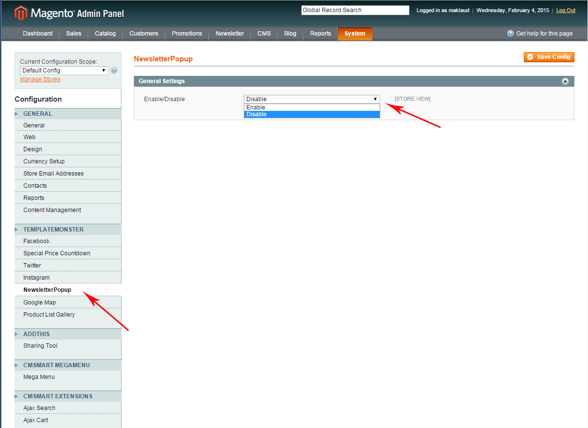
Для редактирования внешнего вида окна, необходимо использовать файл style.css вашей темы. Если вам нужно добавить несколько пользовательских элементов во всплывающий блок, вам необходимо редактировать файл newsletterpopup.phtml, который находится в папке app/design/frontend/default/themeXXX/template/tm/newsletterpopup.
6. Special price countdown
Данный модуль позволяет выводить таймер окончания действия скидки на специальный продукт.
Включить/отключить данный модуль можно в админ панели Magento, в секции System > Configuration > Templatemonster > Special Price Countdown.
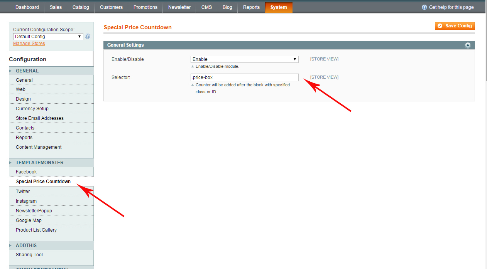
Для редактирования внешнего вида таймера, необходимо использовать файл flipclock.css (flipclock.less), который находится в папке skin/frontend/default/themeXXX/css/tm/specialpricecountdown.
7. Product list gallery
Модуль позволяет выводить миниатюры изображений продукта рядом с главной картинкой продукта. В дефолтной теме миниатюры выводяться под главной картинкой продукта. Но в наших темах, вывод данных миниатюр, реализован согласно псд.
Включить/отключить данный модуль можно в админ панели Magento, в секции System > Configuration > Templatemonster > Product List Gallery.
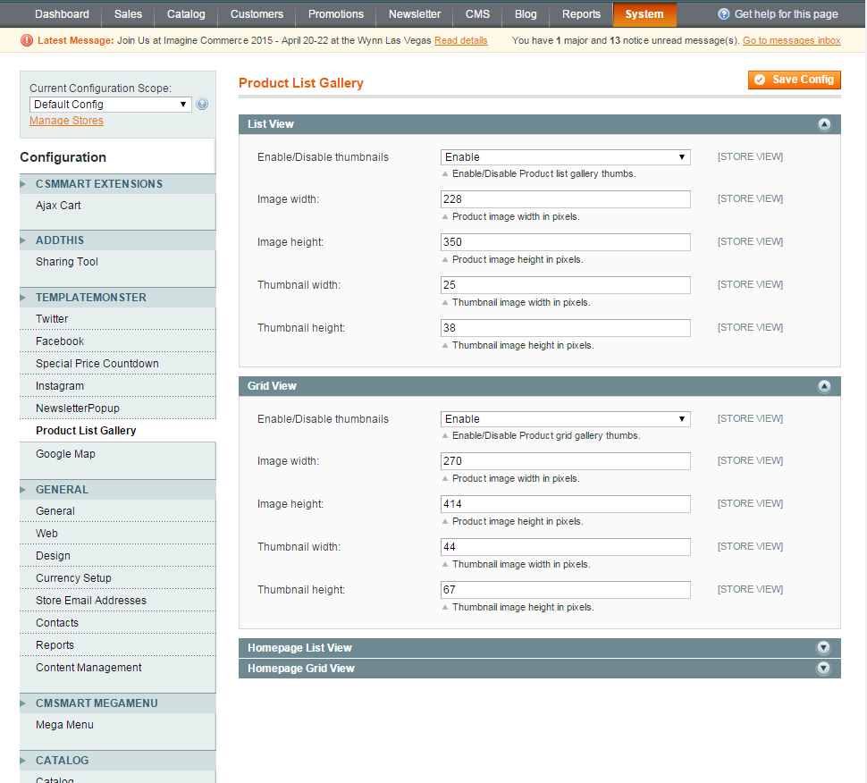
Модуль содержит 4 секции:List View, Grid View, Homepage List View, Homepage Grid View.
В секциях Homepage List View и Homepage Grid View настраивается вывод галереи на главной странице магазина. Другие две секции настраивают вывод галереи на страницах категории.
Все секции содержат одинаковые настройки:
| Enable/Disable - | включить/отключить модуль. |
| Image width - | ширина главной картинки продукта. |
| Image height - | высота главной картинки продукта. |
| Thumbnail width - | ширина миниатюры. |
| Thumbnail height - | высота миниатюры. |
Обратите внимание! Максимальная ширина картинки будет равна ширине колонки в которой она находится.
Настройка сторонних расширений
1. Olark Live Chat
Для использования онлайн чата в шаблоне вам необходимо зарегистрироваться на официальном сайте, ввести все необходимые данные и получить код Olark Site-ID.
Вы также можете получить пробный бесплатный 6-месячный бронзовый пакет. Для этого перейдите по ссылке и внесите свои регистрационные данные.
Чтобы настроить онлайн чат, вам необходимо сделать несколько шагов:
-
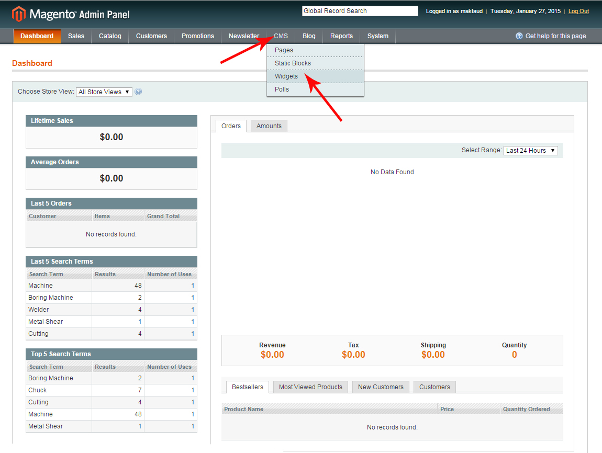
1. Перейдите в админ панель Magento. Кликните пункт меню CMS и в выпадающем меню перейдите к пункту Widgets.
-
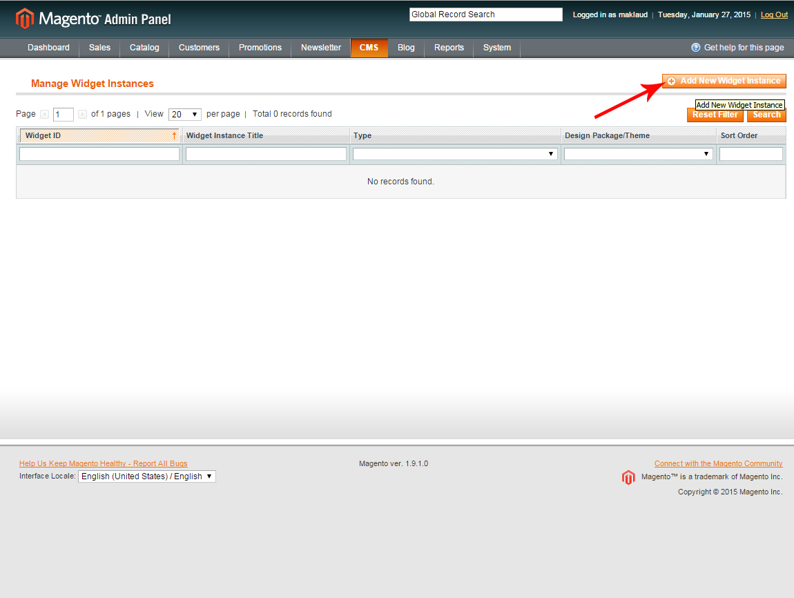
2. На новой странице нажмите на кнопку Add new widget instance.
-
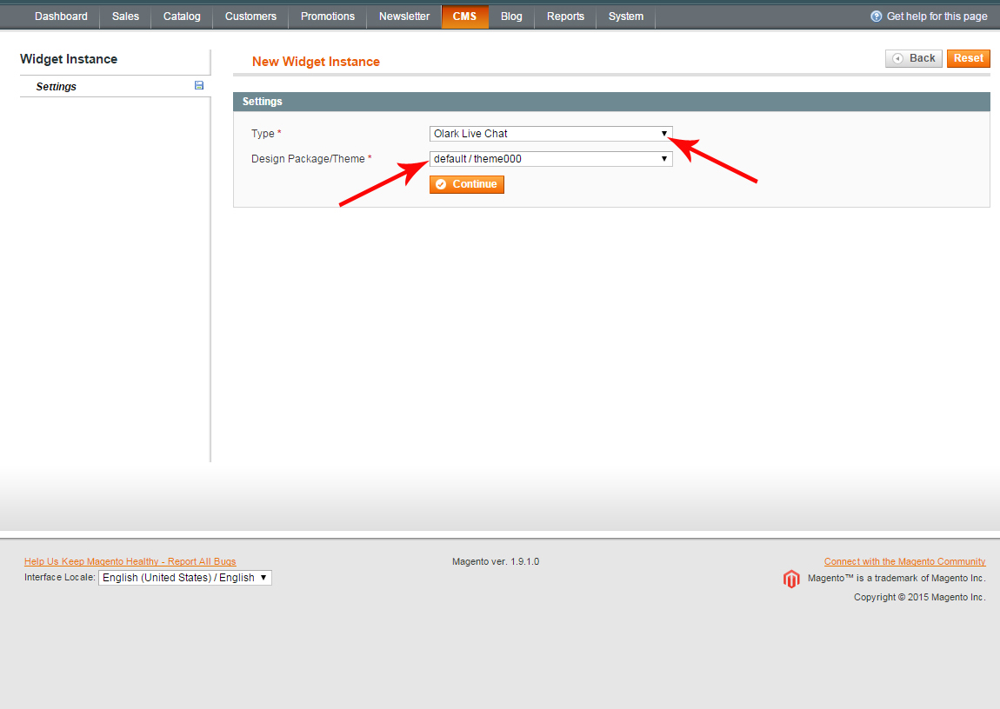
3. В выпадающем меню Type выберите пункт Olark Live Chat, в меню Design Package/Theme выберите скин вашего магазина, на котором должен отображаться чат. Нажмите на кнопку Continue.
-

4. Теперь нам нужно настроить отображение онлайн чата. Для начала, в поле Widget Instance Title впишите название виджета, которое будет отображаться в админ панели. В поле Assign to Store Views вы выбираете представления магазина, для которых будет отображаться ваш чат. В блоке Layout Updates нажмите на кнопку Add Layout Update. В поле Display On вам необходимо выбрать All pages. Для поля Block Reference выберите значение Main Content Area.
-
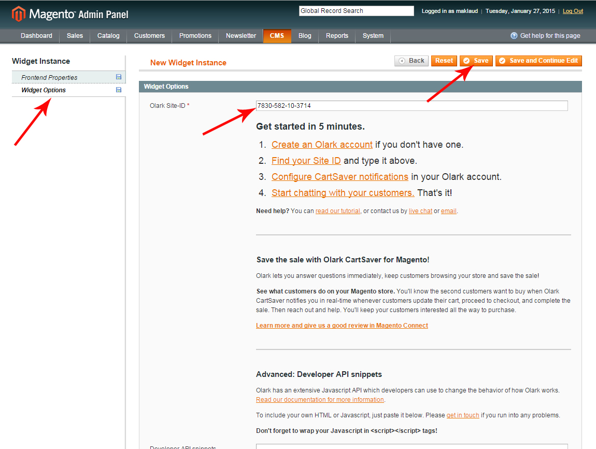
5. Перейдите по ссылке Widget Options в левом сайдбаре. Справа у вас будет поле, в которое требуется ввести Olark Site-ID. После внесения вашего Olark Site-ID нажмите на кнопку Save.
-
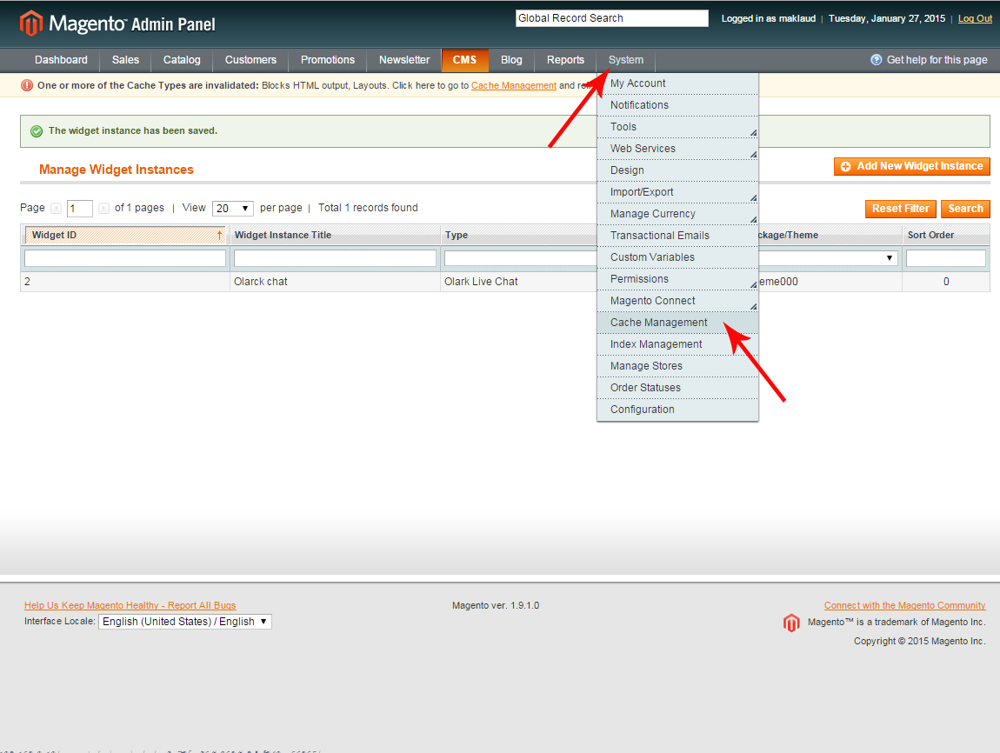
6. В новом окне перейдите на пункт меню System -> Cache Management.
-
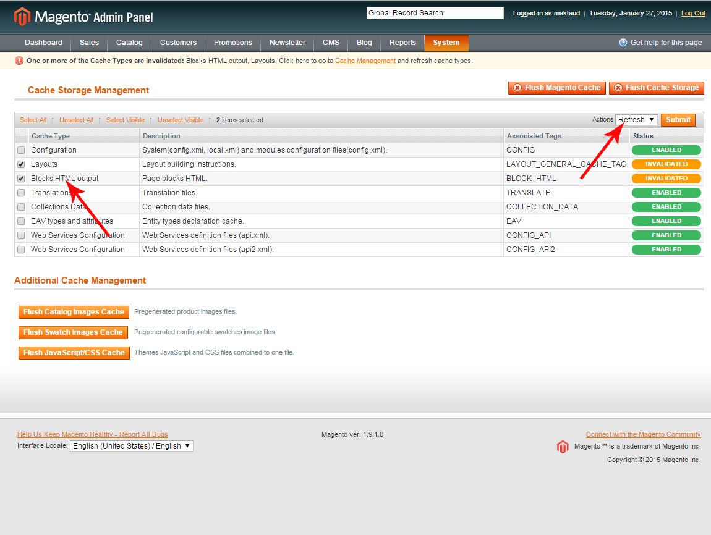
7. В блоке Cache Storage Management выделите пункты Layouts и Blocks HTML output. Убедитесь, что в поле Actions выбран пункт Refresh, и нажмите Submit.
Всё сделано! Теперь вы можете перейти на ваш сайт и увидеть виджет онлайн чата.
Вы также можете ознакомиться со следующими инструкциями:
2. Cloud Zoom
Настройки Cloud Image Zoom дают возможность изменить размеры всплывающей картинки и задать оригинальный размер картинки.
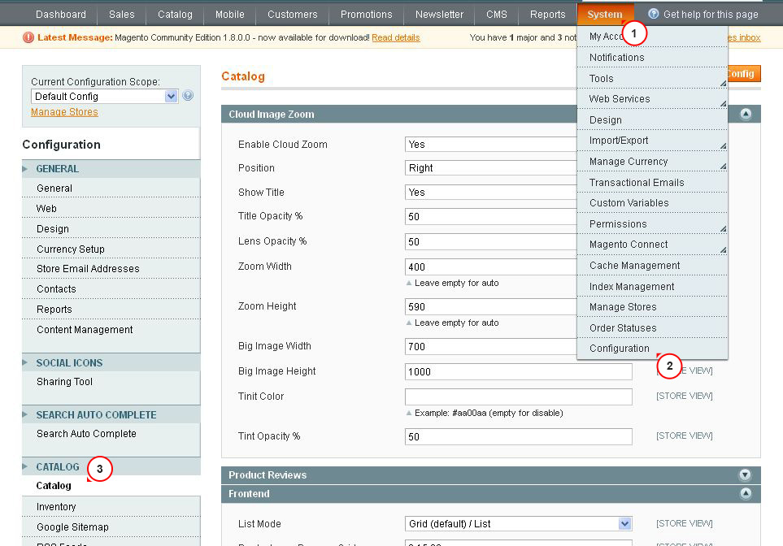
3. Add This
Настройки Sharing Tool дают возможность выбрать вид вывода иконок, рекомендуемый показан на скрине.
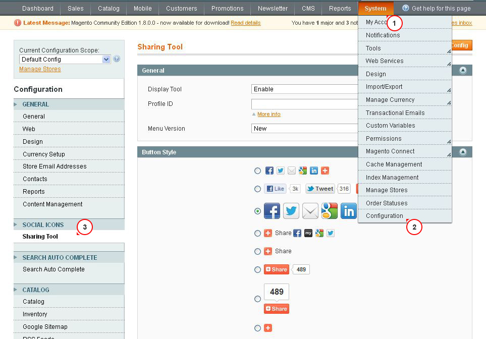
4. Блог
Вы имеете возможность добавить блог на Ваш сайт. Настройки блога находятся в меню Blog > Settings, или System > Configuration > AHEADWORKS EXTENSIONS > Blog.5. Мега меню
Данный модуль заменяет стандартное меню на меню, в котором можно настроить отображение подкатегорий до двух уровней вложенности, добавлять статические блоки в выпадающее меню, добавлять бэйджи (Labels), выводить продукты и т.п.
MegaMenu включено в шаблонах по умолчанию, но включить или выключить его можно в меню System > Configuration > CMSMART MEGAMENU > Mega Menu.
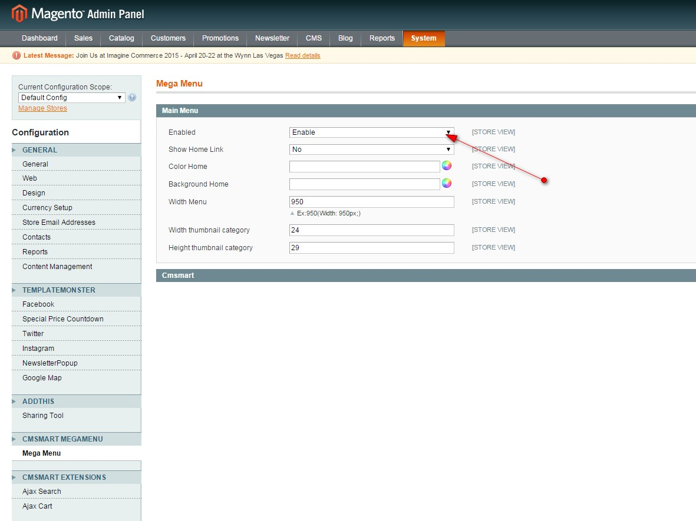
1. Настроить отображение каждого выпадающего меню можно на странице настройки категории, которую вы можете найти в Catalog > Manage Categories.
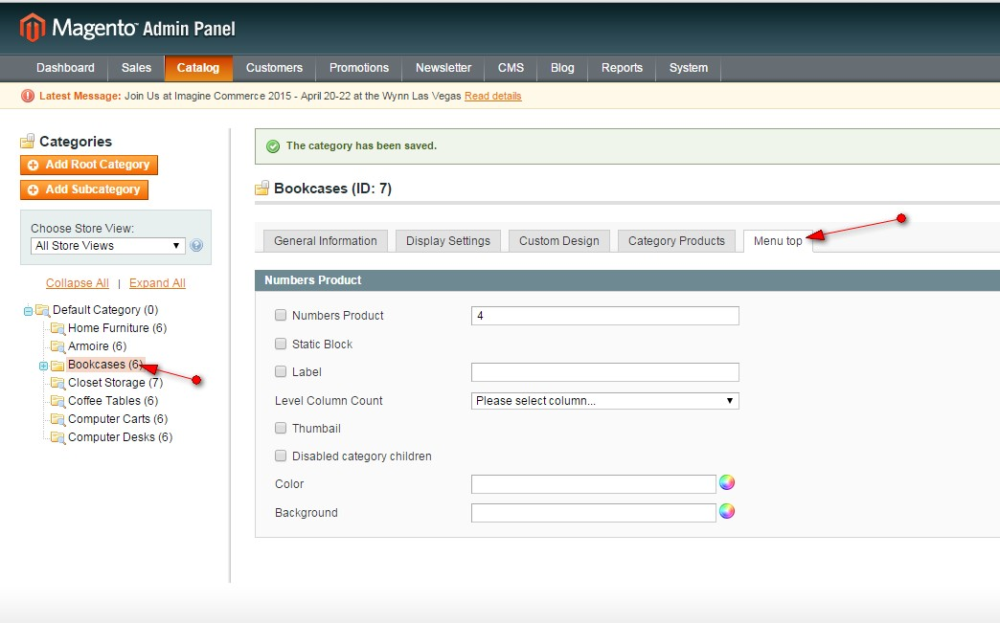
2. Чтобы добавить статик блок в выпадающее меню, вам необходимо добавить статик блок в CMS > Static Blocks и только после этого добавить его в меню.
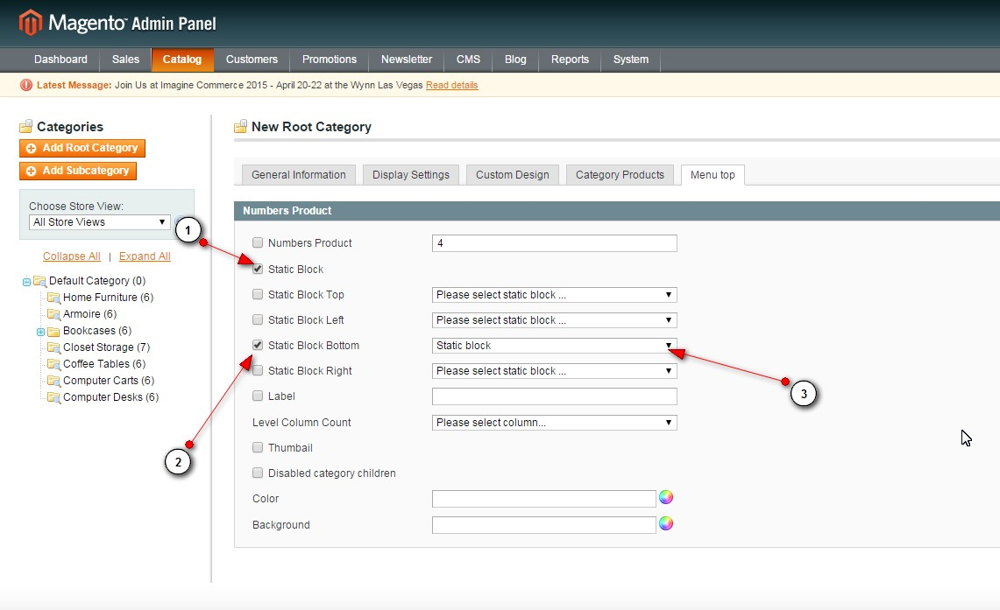
3. В модуле есть возможность добавить бэйдж для любой категории.
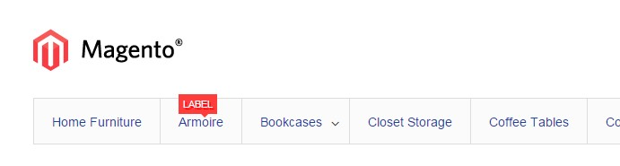
Сделать это вы можете в меню категорий Catalog > Manage Categories.
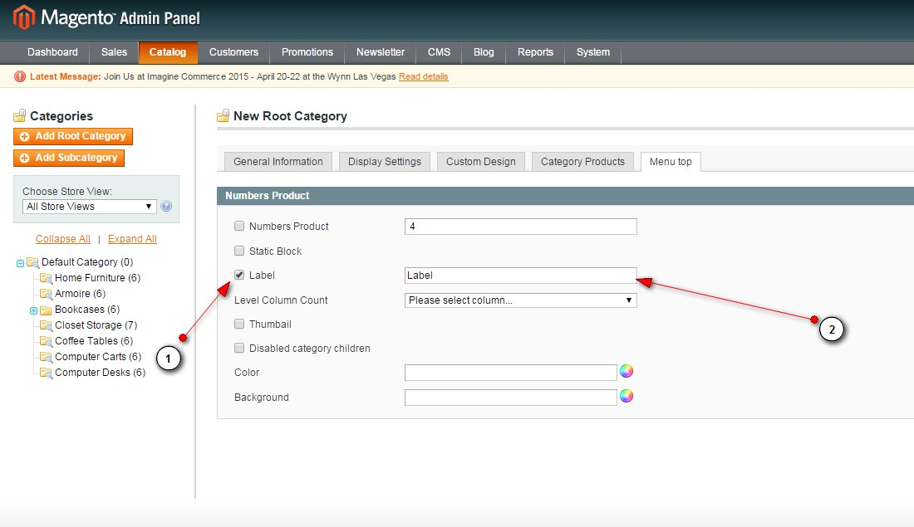
4. Чтобы изменить количество колонок в подкатегориях 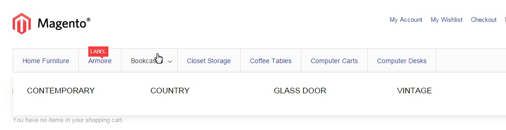 вам необходимо изменить значение (которое соответствует количеству колонок) Level column Count в меню Catalog > Manage Categories.
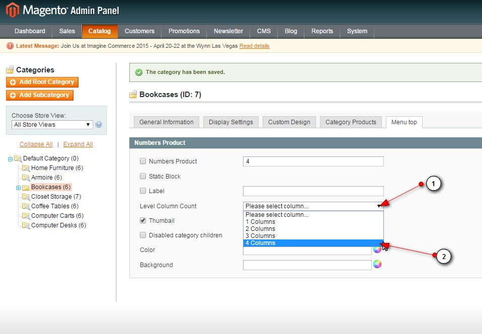
6. Параллакс
Настройка параллакса блока осуществляется посредством добавления части кода в *.phtml файлы вашего шаблона.Чтобы добавить параллакс-эффект на определённый блок контента, необходимо:
1. Добавить любой класс для блока с параллакс эффектом (к примеру, parallax) и добавить атрибут data-source-url="{{skin url='images/your_images.jpg'}}".
2. Добавить изображение в папку с изображениями skin\frontend\default\themeXXX\images\.
3. Добавить стили в файл skin\frontend\default\themeXXX\css\style.css:
.parallax {
background-image: url(../images/parallax-img.jpg);
background-position: 50% 0%;
background-repeat: no-repeat;
background-size: cover;
width: 3500px;
left: 50%;
margin-left: -1750px;
}
4. Добавить в файл skin\frontend\default\themeXXX\js\scripts.js следующий код:
jQuery(window).load(function(){
var isMobile = /Android|webOS|iPhone|iPad|iPod|BlackBerry|IEmobile|Windows Phone|WPDesktop/i.test(navigator.userAgent);
if(!isMobile) {
if(jQuery(".parallax").length){ jQuery(".parallax").cherryFixedParallax({ invert: true,
offset: 300
});
};
};
});
Значение invert: true выбирает направление параллакс эффекта, а offset: 300 его интенсивность.
7. Фоновое видео
Для реализации фонового видео нужно использовать плагин jquery.mb.YTPlayer, который позволяет отображать YouTube видео.Видео можно добавить с помощью статического блока, подключив файл скрипта jquery.mb.YTPlayer.js и добавив соответствующий набор атрибутов для элемента, в котором это видео будет отображаться.
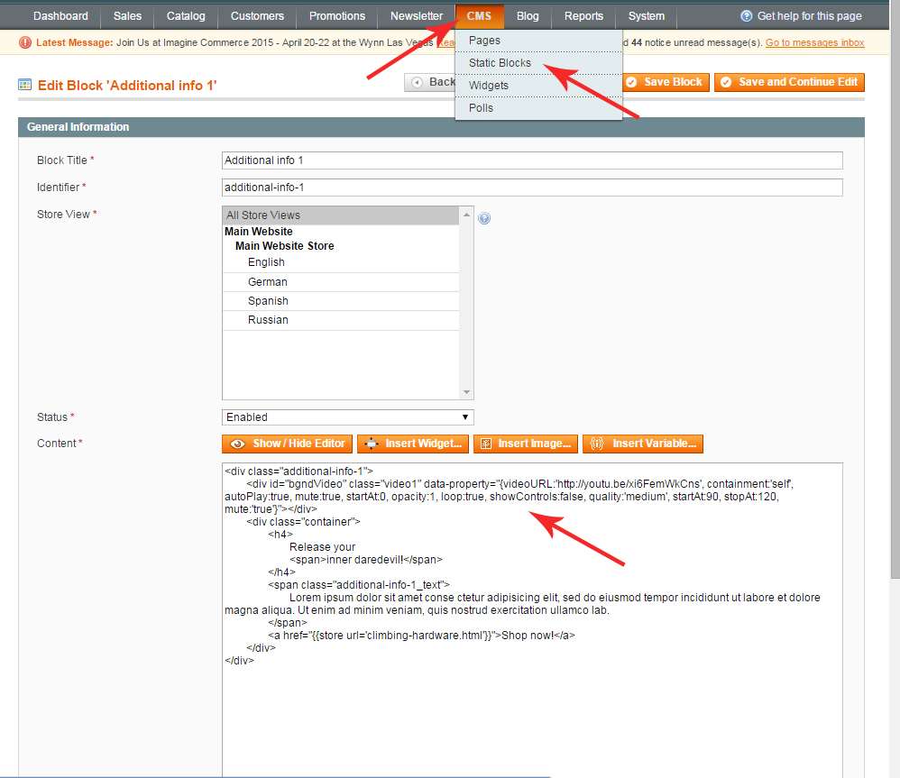
Выделим основные параметры для атрибута data-property:| videoURL - | ссылка на видео, которое вы хотите отобразить как фоновое. |
| quality - | качество отображаемого видео (‘default’ или “small”, “medium”, “large”, “hd720”, “hd1080”, “highres”). |
| containment - | по умолчанию, “self” используется для указания блока, который будет содержать видео, если инициализировать его в скрипте. |
| opacity - | регулирует прозрачность видео значениями от 0 до 1. |
| loop - | включает/отключает повтор видео (true/false). |
| showControls - | включает отображение элементов управления. |
| mute - | отключение звука. |
| startAt - | устанавливает секунду, с которой начнёт проигрываться видео. |
| stopAt - | устанавливает секунду, на которой видео будет заканчиваться. |
| autoplay - | включает автоматическое проигрывание видео. |
8. Политика в отношении куки
Куки - это маленькие текстовые файлы, которые вебсайты размещают на компьютерах посетителей. Обычно они используются для идентификации клиента и облегчают пользование сайтом. Куки являются неотъемлемой частью многих функций вебсайтов, к которым мы давно привыкли.
Например, с помощью куки интернет магазины "запоминают", какие продукты вы добавили в корзину. Куки также позволяют пользователям оставаться "в системе" на сайте, а владельцам сайтов получать важную информацию и статистику о посетителях.
Если вы имеете вебсайт, он скорее всего использует куки. Их самое распространенное применение - отслеживать количество и поведение посетителей, используя такие инструменты как Google Analytics. Куки могут использовать для отображения актуальных для посетителя объявлений. Они также позволяют функционировать основным инструментам интернет магазинов.
26 мая 2012 организация ICO выпустила изменение к правовым нормам о куки. С того момента было разрешено "подразумеваемое согласие", то есть вы должны четко показать, где на сайте находится ваша политика конфиденциальности и куки.
Следуя нормам закона о куки, вы должны добавить соответствующие модули на ваш вебсайт, которые отобразят предупреждение о куки, используемых на сайте. Мы рекомендуем следующие модули:
Выводы
Движок Magento - это замечательное решение для вашего онлайн магазина. Он по умолчанию содержит все модули необходимые для организации эффективных продаж. Открытый исходный код предоставляет вам огромные возможности для создания интернет-магазинов. Но из-за сложности структуры этого движка вам потребуется некоторое время, чтобы освоить все его возможности. Вам понадобится узнать гораздо больше, чем включает эта инструкция.
Чтобы стать настоящим профессионалом Magento, вам потребуются следующие ресурсы:
Полезные ресурсы
- Официальное Руководство Пользователя Magento
- Magento ВИКИ
- База Знаний
- Форум Magento
- Magento туториалы
Помощь и поддержка
Загрузка данных с серверов Google
В некоторых странах существуют проблемы с подключением к серверам Google. Это может привести к загрузке шрифтов Google Fonts с Google CDN. Для решения проблемы следуйте инструкциям:
- Откройте файл app\design\frontend\default\theme***\template\page\html\head.phtml
- Найдите строку:
<link href='//fonts.googleapis.com/css?family=[---your_web_font_name_here---]' rel='stylesheet' type='text/css' />
- Замените её на следующую:
<link href='//fonts.useso.com/css?family=[---your_web_font_name_here---]' rel='stylesheet' type='text/css' />